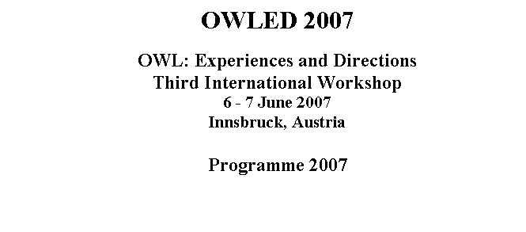

|
11:00-12:00 |
S3: Query languages and Extensions
(10mn) 1.
Boris
Motik, Ian Horrocks and Ulrike Sattler. Adding Integrity
Constraints to OWL 2.
Giorgos Stoilos
and Giorgos Stamou. Extending Fuzzy Description
Logics for the Semantic Web 3.
Diego
Calvanese, Giuseppe De Giacomo,
Domenico Lembo, Maurizio Lenzerini and Riccardo Rosati. Can OWL model
football leagues? 4.
Evren Sirin
and Bijan Parsia. SPARQL-DL: SPARQL
Query for OWL-DL Q&A: 20 mn |
11:00-11:45 |
S7: Ontology
formats (10mn) 1. Christine Golbreich and
Ian Horrocks. The OBO to OWL
mapping, GO to OWL 1.1! 2. Rob Shearer. Structured
Ontology Format 3. Michael Smith, Andrew Schain,
Kendall Clark, Arlen Griffey and Vladimir Kolovski. Mother,
May I? OWL-based
Policy Management at NASA Q&A:15mn |
|
12:00-13:00 |
Panel 1 SPARQL, Rules and
OWL ? Discussion (1h) |
11:45-12:45 |
Panel 3 Life Sciences:
Lessons, Formats, Future
Developments? Discussion (1h) |
|
13:00-14:00 |
Lunch |
12:45-14:00 |
Lunch |
Afternoon
|
|
Wednesday June 06 |
|
Thursday June 07 |
|
14:00-15:30 |
OWL: Present and
beyond? 1.
Report
on OWL 1.1 Standarization Efforts 2. Technical Issues Discussion
|
14:00-15:30 |
Ongoing and Future Standarization
Efforts - W3C Working Group - |
|
15:30-16:00 |
Coffee Break |
15:30-16:00 |
Coffee Break |
|
16:00-16:30
16:30-17:15
|
S4 : Implementations and API (5mn) 1. Matthew Horridge, Sean Bechhofer and Olaf Noppens Igniting the OWL 1.1 Touch Paper:
The OWL API 2. Timo Weithöner, Thorsten Liebig, Marko Luther and Sebastian Böhm.
DIG 2.0 Reference
Middleware 3. Diego Calvanese
and Mariano Rodriguez. An Extension of
DIG 2.0 for Handling Bulk Data 4. Atila Kaya, Ralf Moeller, Alissa Kaplunova and Tobias
Berger. Towards a Scalable
and Efficient Middleware for Instance Retrieval Inference Services Q&A: 10 mn Tools
and Natural Language (10mn) 5. Kaarel
Kaljurand and Norbert Fuchs. Verbalizing OWL in
Attempto Controlled English 6. Michael Wessel and Ralf Möller. Design Principles
and Realization Techniques for User Friendly, Interactive, and Scalable
Ontology Browsing and Inspection Tools 7.
Edward Thomas, Jeff Z. Pan and Derek Sleeman. ONTOSEARCH2:
Searching Ontologies Semantically 8. Raul Garcia-Castro, Asunción Gómez-Pérez
and Jesus Prieto-Gonzalez. IBSE: An OWL
Interoperability Evaluation Infrastructure Q&A: 10 mn |
16:00-17:00 |
S8: Ontology Reasoning and Engineering (10mn) 1. Bernardo Cuenca Grau, Ian Horrocks, Yevgeny Kazakov and Ulrike
Sattler. Extracting Modules
from Ontologies: A Logic-based Approach 2. Franz Baader, Bernhard Ganter, Ulrike Sattler and Baris
Sertkaya. Completing
Description Logic Knowledge Bases using Formal Concept Analysis 3. Rolf Grütter and Bettina
Bauer-Messmer. Combining OWL with
RCC for Spatioterminological Reasoning on
Environmental Data 4. Francesca Alessandra Lisi. Reasoning with
OWL-DL in Inductive Logic Programming Q&A: 20 mn |
|
17:15-18:15 |
Panel 2 What is needed in Industry, new extensions,
editors, tools … ? Discussion (1h) |
17:00-17:30
|
Business Meeting and Closing |
|
18:15-18:45 |
Poster advertizing (3mn /Poster) |
||
|
18:45-20:45 |
Demos, Poster Session and Buffet |